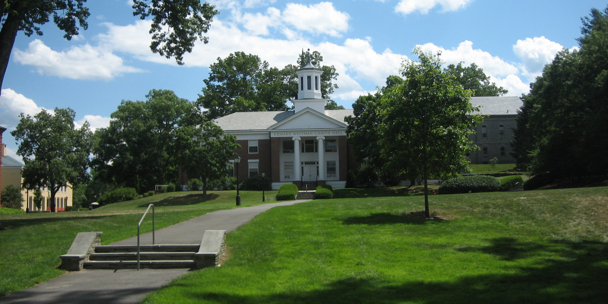

Amherst is a liberal arts college located in Amherst, Massachusetts. The college is in a suburban setting and at the edge of the city. Amherst operates under a semester-based academic schedule. Amherst is a member of the Five Colleges consortium, which also includes Smith, Mount Holyoke, Hampshire, and the University of Massachusetts-Amherst. Students may take courses at any of these colleges. Amherst has a relatively large student body size relative to other liberal arts college. Their 1,785 students make-up a 8:1 student faculty ratio on Amherst's campus. The top five most popular majors are english, history, psychology, economics, and political science. Amherst's mascot, Lord Jeff, leads the school into battle against their well-known rivals, the Williams Ephs. Like their rivals, Amherst abolished Greek Life in the 1980s.
